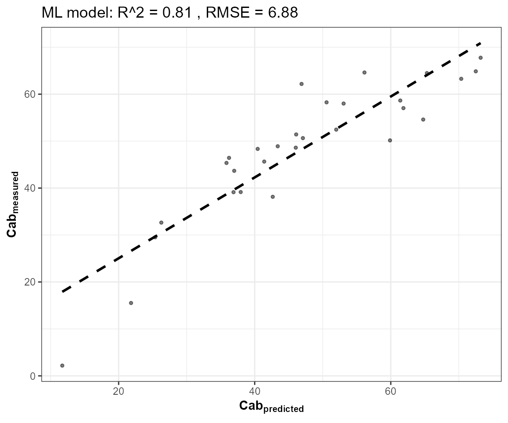
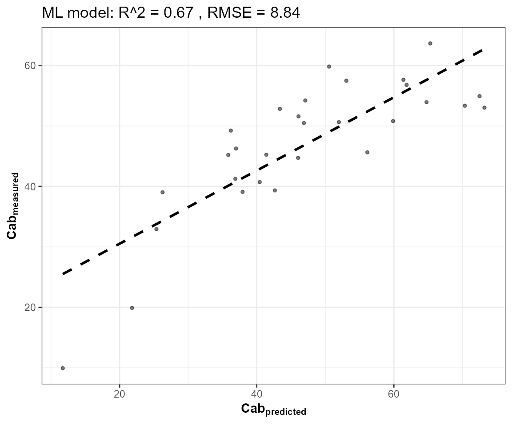
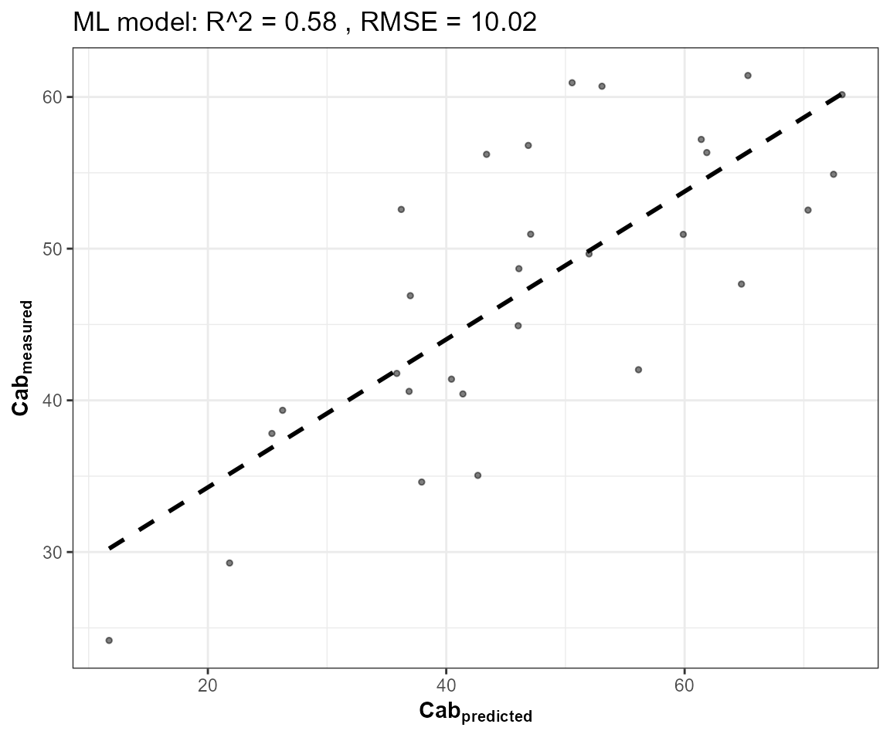
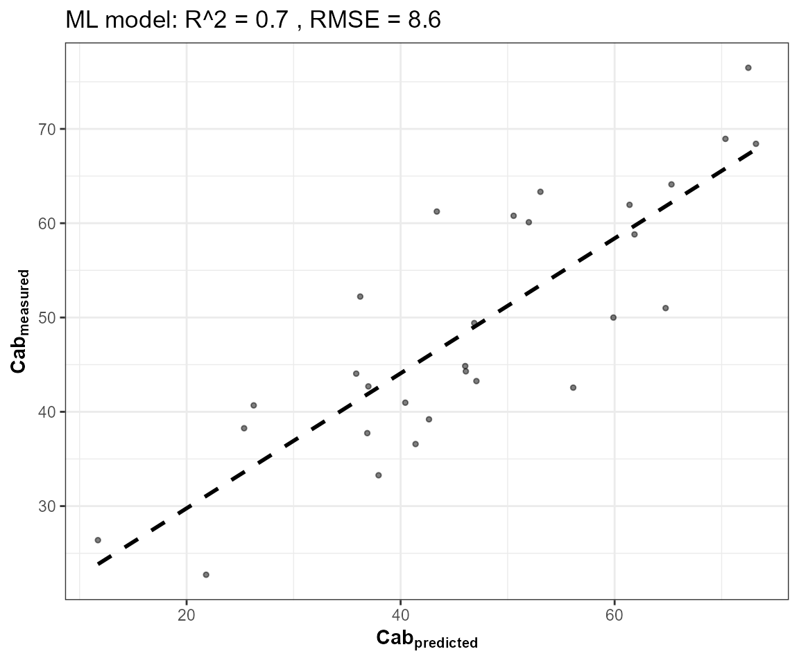
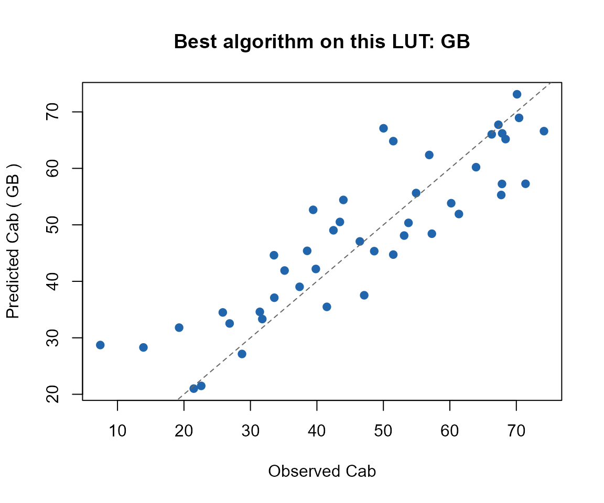

11. Comparing ML Algorithms for RTM Inversion
11-ml-inversion-comparison.Rmd
library(ToolsRTM)Tutorial 10 introduced get.inversion() in passing
(Random Forest only). This page compares several of its 12 supported
algorithms (via caret) on the same LUT/train-test split, so
the comparison is apples-to-apples.
1. Same LUT, same split as Tutorial 10
n_samples <- 150
LUT <- as.data.frame(getLUT(inputs = ToolsRTM::inputsPROSAIL, nLUT = n_samples, setseed = 1))
wl <- 400:2500
rsoil <- rep(0.15, length(wl))
refl <- t(sapply(seq_len(n_samples), function(i) {
foursail(inputLUT = LUT[i, ], rsoil = rsoil, LeafModel = "PROSPECT-PRO")$rsot
}))
refl_X <- as.data.frame(refl); colnames(refl_X) <- paste0("X", wl); refl_X <- cbind(id = seq_len(nrow(refl_X)), refl_X)
se2a <- suppressMessages(get.spectra.convolved(rfl = refl_X, sensor = "Sentinel2a", plot.spectra = FALSE))
#> [1] "Spectral resampling function to SENTINEL2A is being processed ..."
#> | | | 0% | |===== | 8% | |=========== | 15% | |================ | 23% | |====================== | 31% | |=========================== | 38% | |================================ | 46% | |====================================== | 54% | |=========================================== | 62% | |================================================ | 69% | |====================================================== | 77% | |=========================================================== | 85% | |================================================================= | 92% | |======================================================================| 100%
band_names <- paste0("B", seq_along(as.numeric(names(se2a)[-1])))
names(se2a) <- c("id", band_names)
set.seed(1)
train_idx <- sample(seq_len(n_samples), size = round(0.7 * n_samples))
test_idx <- setdiff(seq_len(n_samples), train_idx)
train_df <- cbind(LUT[train_idx, ], se2a[train_idx, band_names])
test_df <- cbind(LUT[test_idx, ], se2a[test_idx, band_names])
r2_f <- function(obs, pred) 1 - sum((obs - pred)^2) / sum((obs - mean(obs))^2)
rmse_f <- function(obs, pred) sqrt(mean((obs - pred)^2))2. Fit several algorithms, predict Cab on the held-out test set
get.inversion() supports 12 algorithms:
"PLSR", "SVM", "RF",
"GB", "NN", "Bayesian",
"AdaBag", "BRNN", "xGB",
"RVM", "qLASSO", "Ensemble".
"NN" (caret’s nnet tuning grid) is skipped
here – impractically slow against this many predictors at only 105
training rows, the same reason this package’s own course pipeline
scripts (Scripts/R/*/2-inversion_ML.R) skip it too. A
representative subset run for real below; the rest of the call is
identical for any of the others.
"Ensemble" (stacks SVM + Gradient Boosting + a
neural net via caretEnsemble) is left out of the comparison
below on purpose: while verifying this page, it surfaced two
real bugs in get.inversion()‘s source (both fixed directly
in the package for this release – fmla.n was referenced
without being defined in that branch, and its internal
stackControl passed the whole training data.frame to
caret::createFolds() instead of the response column,
misaligning fold sizes) – but even after both fixes,
caretEnsemble::caretStack() still fails with
"pred_rows == pred_rows[1L] are not all TRUE", a deeper
row-alignment mismatch across the three stacked sub-models’ predictions
that needs further investigation into how their tuning grids interact,
not something safe to guess-fix here.
algorithms <- c("PLSR", "SVM", "RF", "GB")
fits <- lapply(algorithms, function(algo) {
get.inversion(data = train_df, depVar = "Cab", inputs = band_names,
algorithm = algo, n.samples = nrow(train_df), seed = 42)
})



names(fits) <- algorithms
metrics <- do.call(rbind, lapply(algorithms, function(algo) {
pred <- as.numeric(predict(fits[[algo]]$model, newdata = test_df[, c("Cab", band_names)]))
data.frame(algorithm = algo, R2 = r2_f(test_df$Cab, pred), RMSE = rmse_f(test_df$Cab, pred))
}))
knitr::kable(metrics[order(-metrics$R2), ], digits = 3, row.names = FALSE)| algorithm | R2 | RMSE |
|---|---|---|
| GB | 0.769 | 8.227 |
| SVM | 0.744 | 8.673 |
| PLSR | 0.717 | 9.117 |
| RF | 0.715 | 9.145 |
best_algo <- metrics$algorithm[which.max(metrics$R2)]
pred_best <- as.numeric(predict(fits[[best_algo]]$model, newdata = test_df[, c("Cab", band_names)]))
plot(test_df$Cab, pred_best, pch = 19, col = "#2166AC",
xlab = "Observed Cab", ylab = paste("Predicted Cab (", best_algo, ")"),
main = paste("Best algorithm on this LUT:", best_algo))
abline(0, 1, col = "grey40", lty = 2)
3. Comparing against Tutorial 10’s merit-function matching
se2a_mat <- as.matrix(se2a[, band_names])
opt_rmse <- get.inversionOpt(rfl.sensor = se2a_mat[test_idx, ], rfl.rtm = se2a_mat[train_idx, ],
LUT = LUT[train_idx, ], wave = as.numeric(sub("B", "", band_names)),
method = "merit-RMSE", nOpt = 5)
comparison <- rbind(metrics[, c("algorithm", "R2", "RMSE")],
data.frame(algorithm = "inversionOpt (merit-RMSE)",
R2 = r2_f(LUT[test_idx, ]$Cab, opt_rmse[[2]]$Cab),
RMSE = rmse_f(LUT[test_idx, ]$Cab, opt_rmse[[2]]$Cab)))
knitr::kable(comparison[order(-comparison$R2), ], digits = 3, row.names = FALSE)| algorithm | R2 | RMSE |
|---|---|---|
| GB | 0.769 | 8.227 |
| SVM | 0.744 | 8.673 |
| PLSR | 0.717 | 9.117 |
| RF | 0.715 | 9.145 |
| inversionOpt (merit-RMSE) | 0.287 | 14.472 |
At this LUT size (150 rows, 105 training), a fitted ML model and pure
LUT-search inversion are often close – the gap widens in the ML model’s
favour with more training data, and in get.inversionOpt()’s
favour when too little data is available to fit a model reliably
(Tutorial 10’s discussion of when to use which).
What’s next
-
Tutorial 12 – deep learning
(
getMLmodel()) on the same kind of data, and when it’s worth the extra complexity over the algorithms here. - Tutorial 13 – this whole simulate-convolve-invert chain as one coherent pipeline, across every canopy model this package supports.